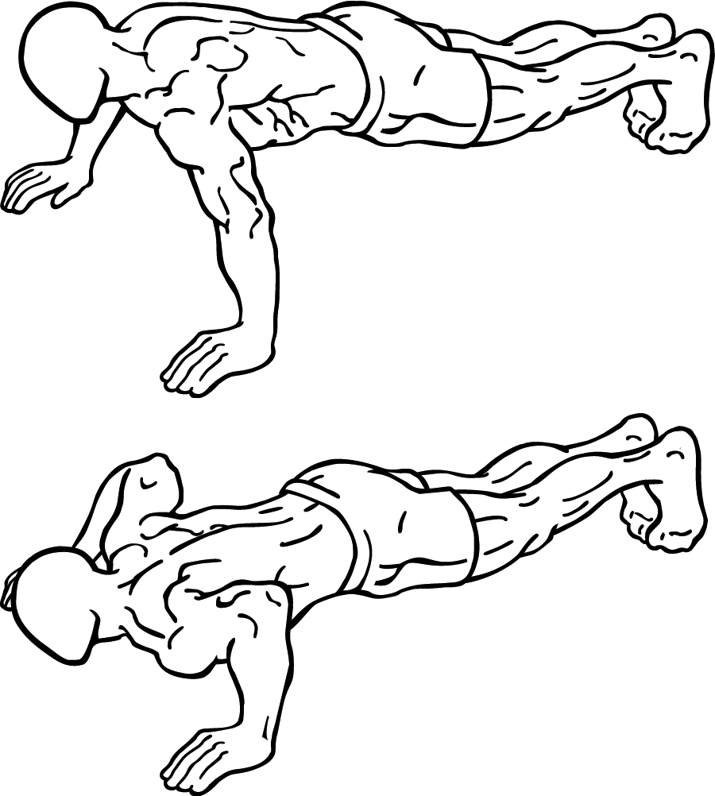

Benefits of Chest Push-ups:



1) Functional Fitness: Push-ups mimic everyday movements like pushing doors, lifting
objects, or pushing
oneself off the ground. By strengthening the muscles involved in these actions, chest push-ups improve
overall functional fitness.
2) Body Strength: Chest push-ups primarily target the pectoralis major muscle, which
is responsible for
the majority of chest muscle development. They also engage the deltoids (shoulders), triceps (back of
the
arms), and core uscles, leading to a well-rounded upper body workout.
3) Convenience and Accessibility: With no equipment required, chest push-ups can be
performed anytime,
anywhere, making them an ideal exercise for those who prefer to work out at home or while traveling.
4) Core Activation: Maintaining a rigid core during push-ups is essential for
stability and proper form.
Consequently, chest push-ups can help strengthen the abdominal and lower back muscles.
Benefits of Chest Push-ups:
1) Increased Strength:
Biceps workouts, such as curls and variations of curls, specifically target the biceps brachii muscle,
leading to increased strength and muscular endurance in this area.
2)Enhanced Upper Body Functionality: Well-developed biceps provide functional
benefits by improving your ability to perform everyday tasks that require upper body strength. Whether
it's lifting groceries, carrying heavy bags, or even performing physical work.
3)Balanced Upper Body: Building biceps strength is essential for maintaining
muscular balance in the upper body. It helps counteract the strength developed in the triceps, the
opposing muscle group on the back of the upper arm.
4)Improved Grip Strength: Strong biceps contribute to better grip strength, which is
crucial for various activities and sports that require holding onto objects or maintaining a secure
grip, such as rock climbing, weightlifting, and racket sports.